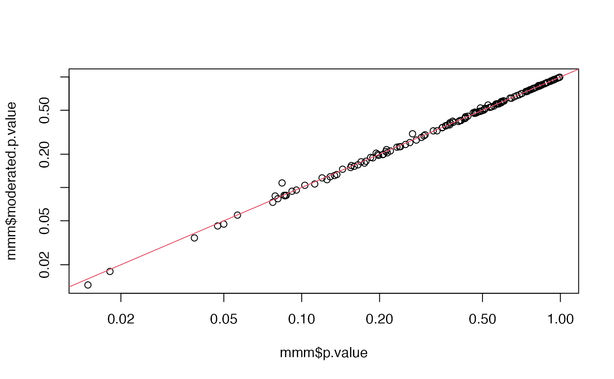
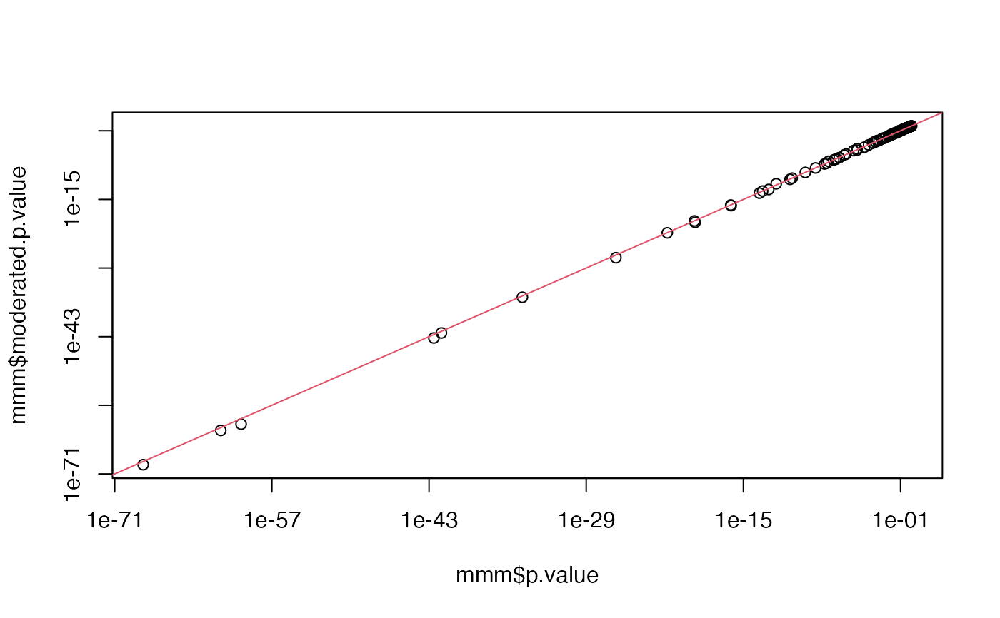

Moderate p-value for long table
moderated_p_limma_long(mm, group_by_col = "lhs", robust = FALSE)
| mm | result of |
|---|---|
| group_by_col | colnames with contrast description - default 'lhs' |
Other modelling:
ContrastsModerated,
ContrastsROPECA,
ContrastsSimpleImpute,
Contrasts_Plotter,
Contrasts,
INTERNAL_FUNCTIONS_BY_FAMILY,
LR_test(),
Model,
build_model(),
get_complete_model_fit(),
get_imputed_contrasts(),
get_model_coefficients(),
get_p_values_pbeta(),
isSingular_lm(),
linfct_all_possible_contrasts(),
linfct_factors_contrasts(),
linfct_from_model(),
linfct_matrix_contrasts(),
make_custom_model_glm(),
make_custom_model_lmer(),
make_custom_model_lm(),
model_analyse(),
moderated_p_limma(),
ms_brms_model(),
ms_mcmc_checkzero(),
ms_mcmc_constrast(),
my_contest(),
my_contrast_V1(),
my_contrast_V2(),
my_contrast(),
my_glht(),
pivot_model_contrasts_2_Wide(),
plot_lmer_model_and_data_TWO(),
plot_lmer_model_and_data(),
plot_lmer_peptide_noRandom_TWO(),
plot_lmer_peptide_noRandom(),
plot_lmer_peptide_predictions(),
plot_lmer_predicted_interactions(),
summary_ROPECA_median_p.scaled()
library(prolfqua) modelSummary_A <- prolfqua::modellingResult_A m <- get_complete_model_fit(modelSummary_A$modelProtein) factor_contrasts <- linfct_factors_contrasts(m$linear_model[[1]]) factor_levelContrasts <- contrasts_linfct( modelSummary_A$modelProtein, factor_contrasts, subject_Id = "Compound", contrastfun = my_contrast_V2)#>mmm <- moderated_p_limma_long(factor_levelContrasts, group_by_col = "lhs") plot(mmm$p.value, mmm$moderated.p.value, log = "xy")# updating lmer model models_interaction <- prolfqua::models_interaction m <- get_complete_model_fit(models_interaction$modelProtein) factor_contrasts <- linfct_factors_contrasts(m$linear_model[[1]]) factor_levelContrasts <- contrasts_linfct(m, factor_contrasts, subject_Id = "protein_Id")#>#> # A tibble: 6 x 19 #> protein_Id lhs estimate std.error df statistic conf.low conf.high #> <chr> <chr> <dbl> <dbl> <dbl> <dbl> <dbl> <dbl> #> 1 sp|O43707~ Cond~ 0.687 0.188 185. 3.66 0.317 1.06 #> 2 sp|P01024~ Cond~ -0.847 0.347 242. -2.44 -1.53 -0.163 #> 3 sp|P04083~ Cond~ -0.114 0.117 178. -0.978 -0.344 0.116 #> 4 sp|P07737~ Cond~ 0.572 0.220 145. 2.61 0.138 1.01 #> 5 sp|P07942~ Cond~ -0.561 0.104 474. -5.39 -0.765 -0.356 #> 6 sp|P08253~ Cond~ -0.889 0.0930 537. -9.55 -1.07 -0.706 #> # ... with 11 more variables: p.value <dbl>, sigma <dbl>, isSingular <lgl>, #> # sigma.model <dbl>, df.residual.model <dbl>, moderated.df.prior <dbl>, #> # moderated.var.prior <dbl>, moderated.var.post <dbl>, #> # moderated.statistic <dbl>, moderated.df.total <dbl>, #> # moderated.p.value <dbl>